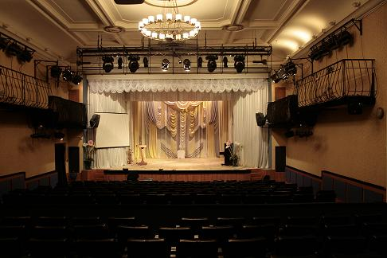

История
Пермский театр кукол. История театра
Пермский театр кукол был создан в 1937-м году. Он начал свою жизнь подобно знаменитому театру С.В.
Образцова — на основе небольшой труппы, и со сказки «По щучьему велению», шедшей тогда в московском
театре. За прошедшие 80 лет на творческой и житейской жизни театра отразилась вся непростая история
нашей страны. Сегодня Пермский театр кукол — репертуарный стационарный театр с большим и малым залами,
один из центров культурной жизни города. В репертуаре театра как спектакли для детей и юношества, так
и спектакли для взрослых, основанные на литературном материале высокого качества.
До получения в 1959-м году в постоянное пользование исторического здания работы архитектора Н.Рукавишникова театр вел кочевую жизнь, гастролируя на грузовиках, пароходах, лошадях. В годы Великой Отечественной войны совсем лишился крыши над головой, но работы не прекращал. В 1943-м году впервые в нашей стране режиссером Л. Цимловой была поставлена кукольная опера «Муха-цокотуха» М. Красева. Автор посвятил её эвакуированным московским детям. В это время в театре работали художник Ю. Васнецов, поэтесса Е. Трутнева.
Старая дружба с С.В. Образцовым в конце 50-х обрела и техническую ипостась — Сергей Владимирович и постановочная часть его легендарного театра помогли построить и оборудовать сцену в здании, где отныне располагается Пермский театр. Режиссёр и знаменитый впоследствии аниматор «Пермтелефильма» Л. Кощенников, с именем которого связана судьба Пермского театра кукол с конца 50-х до начала 80-х, так вспоминал об этом сотрудничестве: «Осенью 1958 года началась и уже шла эпопея перестройки тюрьмы под здание театра. Задача у городских властей была такая: построить не просто театр кукол, а центр детской театральной культуры. Нам нужно было решить, как целесообразнее устроить сцену. С.В. Образцов помог нам советами. Реконструкция бывшей тюрьмы под театр обошлась в 2 млн. рублей. Первой большой постановкой в своем доме стала комедия для взрослых «Чертова мельница». Больших мастерских еще не было, поэтому кукол делали в мастерских Государственного Центрального театра кукол под руководством С.В. Образцова».
Главным режиссёром театра в период с 1960-го по 1982-й год служил Виктор Давидович Офрихтер, один из основателей Пермского театра рабочей молодежи (ныне Пермский академический Театр-Театр), руководитель театральной студии. Он заложил фундамент сегодняшнего театра, поднял его творческую работу на новый уровень, работал с редкой увлечённостью. В 2010-м году на здании Пермского театра кукол была открыта мемориальная доска в его честь.
Большое влияние на постановочную культуру театра оказало также и участие работников театра в творческой лаборатории С.В. Образцова, приглашение режиссёров Б. Аблынина, А. Федотова, работа художников В.Стенинга, П.Шенхофа, А.Кнерцер, В.Андриевича, Ф.Файнштейна. Была обучена стажерская группа и студия при театре.
Театр получил дипломы за участие в смотрах польской, чешской, венгерской драматургии и на советской сцене за успешные поиски своей драматургии. Лучшие спектакли этого времени — «Сэмбо», «Клоп», «Кукольный город», «Капризка», кукольные оперы «Муха-цокотуха» и «Мойдодыр», пантомима «Красная птица», опера-буфф «Прекрасная Елена».
Следующий этап в жизни театра связан с деятельностью режиссера И.В. Игнатьева (ныне художественный руководитель Санкт-Петербургского театра «Сказка», заслуженный деятель искусств России) и художника А.Д.Игнатьевой (работали в театре с 1983-1987 гг.). Высокопрофессиональная режиссура, яркое образное решение спектакля, современная постановочная культура этих мастеров была отмечена критикой, всесоюзной лабораторией художников и режиссеров. С их спектаклями театр побывал на фестивалях Урала, Нечерноземья, на гастролях в Москве, Узбекистане, на Украине, в Луисвилле (США — 1995 г.), в Японии — на гастролях и XV Всемирном конгрессе УНИМА (1988 г.). Спектакль «Машенька и медведь», созданный И. и А. Игнатьевыми, до сих пор в репертуаре театра.

До получения в 1959-м году в постоянное пользование исторического здания работы архитектора Н.Рукавишникова театр вел кочевую жизнь, гастролируя на грузовиках, пароходах, лошадях. В годы Великой Отечественной войны совсем лишился крыши над головой, но работы не прекращал. В 1943-м году впервые в нашей стране режиссером Л. Цимловой была поставлена кукольная опера «Муха-цокотуха» М. Красева. Автор посвятил её эвакуированным московским детям. В это время в театре работали художник Ю. Васнецов, поэтесса Е. Трутнева.
Старая дружба с С.В. Образцовым в конце 50-х обрела и техническую ипостась — Сергей Владимирович и постановочная часть его легендарного театра помогли построить и оборудовать сцену в здании, где отныне располагается Пермский театр. Режиссёр и знаменитый впоследствии аниматор «Пермтелефильма» Л. Кощенников, с именем которого связана судьба Пермского театра кукол с конца 50-х до начала 80-х, так вспоминал об этом сотрудничестве: «Осенью 1958 года началась и уже шла эпопея перестройки тюрьмы под здание театра. Задача у городских властей была такая: построить не просто театр кукол, а центр детской театральной культуры. Нам нужно было решить, как целесообразнее устроить сцену. С.В. Образцов помог нам советами. Реконструкция бывшей тюрьмы под театр обошлась в 2 млн. рублей. Первой большой постановкой в своем доме стала комедия для взрослых «Чертова мельница». Больших мастерских еще не было, поэтому кукол делали в мастерских Государственного Центрального театра кукол под руководством С.В. Образцова».
Главным режиссёром театра в период с 1960-го по 1982-й год служил Виктор Давидович Офрихтер, один из основателей Пермского театра рабочей молодежи (ныне Пермский академический Театр-Театр), руководитель театральной студии. Он заложил фундамент сегодняшнего театра, поднял его творческую работу на новый уровень, работал с редкой увлечённостью. В 2010-м году на здании Пермского театра кукол была открыта мемориальная доска в его честь.
Большое влияние на постановочную культуру театра оказало также и участие работников театра в творческой лаборатории С.В. Образцова, приглашение режиссёров Б. Аблынина, А. Федотова, работа художников В.Стенинга, П.Шенхофа, А.Кнерцер, В.Андриевича, Ф.Файнштейна. Была обучена стажерская группа и студия при театре.
Театр получил дипломы за участие в смотрах польской, чешской, венгерской драматургии и на советской сцене за успешные поиски своей драматургии. Лучшие спектакли этого времени — «Сэмбо», «Клоп», «Кукольный город», «Капризка», кукольные оперы «Муха-цокотуха» и «Мойдодыр», пантомима «Красная птица», опера-буфф «Прекрасная Елена».
Следующий этап в жизни театра связан с деятельностью режиссера И.В. Игнатьева (ныне художественный руководитель Санкт-Петербургского театра «Сказка», заслуженный деятель искусств России) и художника А.Д.Игнатьевой (работали в театре с 1983-1987 гг.). Высокопрофессиональная режиссура, яркое образное решение спектакля, современная постановочная культура этих мастеров была отмечена критикой, всесоюзной лабораторией художников и режиссеров. С их спектаклями театр побывал на фестивалях Урала, Нечерноземья, на гастролях в Москве, Узбекистане, на Украине, в Луисвилле (США — 1995 г.), в Японии — на гастролях и XV Всемирном конгрессе УНИМА (1988 г.). Спектакль «Машенька и медведь», созданный И. и А. Игнатьевыми, до сих пор в репертуаре театра.
С 1995-го по 2013-й годы театр возглавлял Игорь Нисонович Тернавский, фигура поистине легендарная не
только в Перми, но и за её пределами. С его именем связано рождение и развитие многих значительных
для культуры Пермского края творческих коллективов. Он воспитал плеяду талантливых учеников, ставших
заметными в Перми деятелями культуры (художественный руководитель Пермского академического Театра-Театра
Борис Мильграм, директор Пермского академического Театра-Театра Анатолий Пичкалев, режиссер Валерий Стариков
и др.).
В 1960-х он запустил знаменитый СТЭМ — Студенческий Театр эстрадных миниатюр Пермского политехнического института, в 1970-х — театр-студию «Арлекин», в 1980-х — был главным режиссёром цирков в нескольких регионах страны.
За годы его художественного руководства Пермский театр кукол получил дополнительный импульс развития, была создана постановочная база и масса интересных спектаклей, в театр пришел новый зритель. Режиссерские и актерские работы И.Н. Тернавского демонстрируют широкий диапазон его творческих амбиций и интересов: «Чайка», «Бумбараш», «Необыкновенные приключения на дорогах», «Волшебник Изумрудного города», «Маугли», «Колобок», «Обыкновенный кукольный концерт», «Колобок», «Король Лир». Среди актерских работ — поистине яркие и выразительные роли: вожак Акелла в музыкальной драме «Маугли»; Конферансье в спектакле «Обыкновенный кукольный концерт» и Сказочник в спектакле «Колобок». Но, пожалуй, главная роль И.Н. Тернавского — Король Лир. Его спектакль по одноименной трагедии У. Шекспира стал выдающимся событием в творческой биографии театра кукол и личной творческой истории актера и режиссёра. И. Тернавскому удалось совершенно по новому, оригинально выявить возможности кукольного жанра.
Первое десятилетие XXI века было отмечено многими значительными работами театра. Среди них спектакль «Ты кто?» по рассказам А.Платонова, ставший лауреатом фестиваля «Волшебная кулиса» в 1999 году, и получивший специальный приз Департамента культуры и искусства администрации Пермской области «За мастерство» на VIII Всероссийском фестивале моноспектаклей (2000 г.). Музыкальная драма «Маугли» была удостоена областной Премии «За лучшее достижение в сфере культуры и искусства». С большим размахом, на высоком художественном и организационном уровне прошел в июне 2003 года на базе Пермского театра кукол IX Фестиваль театров кукол «Большой Урал — Приволжье», что было отмечено участниками из 14 театров России и Казахстана, критиками и почетными гостями. Спектакль «Маугли» отмечен специальным призом жюри фестиваля. Весной 2007 года Пермский театр кукол занял первое место на краевом фестивале театральных капустников «Соленые уши».
В 1960-х он запустил знаменитый СТЭМ — Студенческий Театр эстрадных миниатюр Пермского политехнического института, в 1970-х — театр-студию «Арлекин», в 1980-х — был главным режиссёром цирков в нескольких регионах страны.
За годы его художественного руководства Пермский театр кукол получил дополнительный импульс развития, была создана постановочная база и масса интересных спектаклей, в театр пришел новый зритель. Режиссерские и актерские работы И.Н. Тернавского демонстрируют широкий диапазон его творческих амбиций и интересов: «Чайка», «Бумбараш», «Необыкновенные приключения на дорогах», «Волшебник Изумрудного города», «Маугли», «Колобок», «Обыкновенный кукольный концерт», «Колобок», «Король Лир». Среди актерских работ — поистине яркие и выразительные роли: вожак Акелла в музыкальной драме «Маугли»; Конферансье в спектакле «Обыкновенный кукольный концерт» и Сказочник в спектакле «Колобок». Но, пожалуй, главная роль И.Н. Тернавского — Король Лир. Его спектакль по одноименной трагедии У. Шекспира стал выдающимся событием в творческой биографии театра кукол и личной творческой истории актера и режиссёра. И. Тернавскому удалось совершенно по новому, оригинально выявить возможности кукольного жанра.
Первое десятилетие XXI века было отмечено многими значительными работами театра. Среди них спектакль «Ты кто?» по рассказам А.Платонова, ставший лауреатом фестиваля «Волшебная кулиса» в 1999 году, и получивший специальный приз Департамента культуры и искусства администрации Пермской области «За мастерство» на VIII Всероссийском фестивале моноспектаклей (2000 г.). Музыкальная драма «Маугли» была удостоена областной Премии «За лучшее достижение в сфере культуры и искусства». С большим размахом, на высоком художественном и организационном уровне прошел в июне 2003 года на базе Пермского театра кукол IX Фестиваль театров кукол «Большой Урал — Приволжье», что было отмечено участниками из 14 театров России и Казахстана, критиками и почетными гостями. Спектакль «Маугли» отмечен специальным призом жюри фестиваля. Весной 2007 года Пермский театр кукол занял первое место на краевом фестивале театральных капустников «Соленые уши».